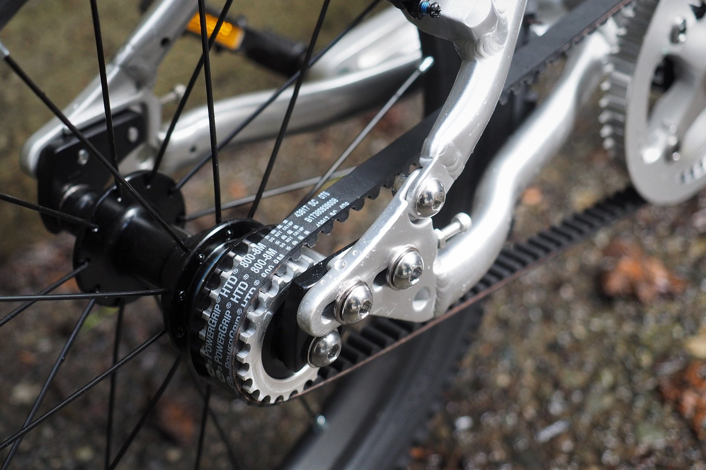
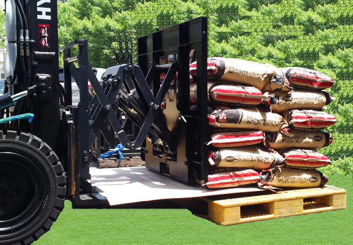
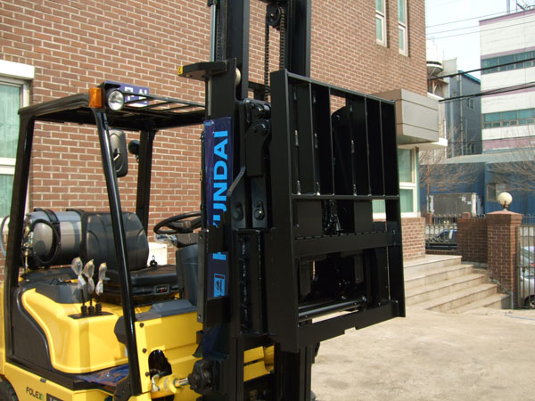

업체 조사 (자전거 · 지게차 어태치먼트 · 이륜차)
1
6월 조사 개요
벨트 전환 적용처·실수요처가 될 수 있는 후보 업체를 발굴·조사
6월 조사 대상 정리
| 구분 | 조사 대상 | 조사 내용 | 상태 |
|---|---|---|---|
| 자전거 | 벨트구동 모델(얼리라이더 등) · Gates 벨트 | 모델 팩트체크 · 적용처 조사 | 조사중 |
| 이륜 / 스쿠터 | 전기스쿠터 체인 → 카본벨트 전환 동향 | 시장 동향 파악 | 조사중 |
| 중경산업기계 (지게차 어태치먼트) | 지게차 어태치먼트 제조 영역 확인 | 업체 확인 · 영업접점 | 조사중 |
2
자전거 · 이륜(스쿠터) Chain to Belt
자전거 벨트 적용 조사 + 전기스쿠터 체인 → 카본벨트 전환 동향
거론 모델 팩트체크
| 모델 | 구분 | 조사 내용 |
|---|---|---|
| 얼리라이더 (Early Rider) | 벨트 구동 ○ | Belter 시리즈(14·16·20·24")가 Gates 카본벨트 구동 채택. Belter 16은 "세계 최다 판매 벨트구동 자전거"로 소개됨. |
얼리라이더 — 벨트 구동부

※ 얼리라이더 벨트 구동부 — Gates 카본벨트(무윤활·정숙 구동) 적용
Gates 벨트 핵심 내용 — "변속 불가"
벨트 구동은 외장 변속 사용 불가
GATES BELT 채택 자전거 브랜드
| 브랜드 | 제조 국가 | 특징 (Gates Carbon Drive 채택) |
|---|---|---|
| Priority Bicycles | 미국 | 벨트구동 대중화 브랜드 — Start·Continuum 등, Gates CDN 벨트 기본 장착 |
| Trek (District) | 미국 | 도심 커뮤터·e-bike에 Gates CDX 벨트 적용 (오토시프트 모델 포함) |
| Tern | 대만 | 접이식·카고 자전거에 Gates 카본벨트 채택 |
| Schindelhauer | 독일 | Gates CDX CenterTrack 벨트+내장허브 전문 프리미엄 자전거 |
| Riese & Müller | 독일 | 전기자전거에서 Gates 벨트로 무윤활·저소음 이점 확대 |
전환 가치
무윤활 — 기름때·정기 윤활 부담 제거
정숙성 — 체인 대비 저소음 구동
관리 최소 — 신장·정렬 관리 부담 감소
정숙성 — 체인 대비 저소음 구동
관리 최소 — 신장·정렬 관리 부담 감소
진입 과제
Gates 독점 구조 — Carbon Drive 중심 시장 선점
변속 제약 — 디레일러 불가, IGH 조합 필요(비용↑)
적용처 한정 — 벨트 호환 프레임(스플릿 프레임) 필요
변속 제약 — 디레일러 불가, IGH 조합 필요(비용↑)
적용처 한정 — 벨트 호환 프레임(스플릿 프레임) 필요
이륜(스쿠터) — 체인 → 카본벨트 전환
스쿠터 시장 · 전환 동향
내연 → 전기 대다수 전환
체인 구동의 소음·신장 불만 → 카본벨트 전환 시도 사례 확인
체인 구동의 소음·신장 불만 → 카본벨트 전환 시도 사례 확인
바이크뱅크 업체 조사
이륜 렌트 1위 업체, 전기 스쿠터로 99% 전환
대만 고고로(Gogoro) 도입
고고로 체인엔진에 카본벨트 설계 (6월 출시 예정)
대만 OEM 공급, GATES 벨트 적용
대만 고고로(Gogoro) 도입
고고로 체인엔진에 카본벨트 설계 (6월 출시 예정)
대만 OEM 공급, GATES 벨트 적용
3
중경산업기계(주) — 지게차 어태치먼트 제조사
업체 정보
중경산업기계(주) — 지게차용 어태치먼트 전문 제조사 (1994년 설립 · 인천 남동공단 본사·공장 / 울산 여천공단)독일 MEYER사 기술제휴, 현대중공업 OEM 품질검증 납품 이력 보유
지게차 어태치먼트 — 적재 작업

※ 현대지게차 어태치먼트로 포대(사료·곡물 등) 적재 작업
지게차 어태치먼트 — 장착 실물

※ 현대지게차에 장착된 어태치먼트(푸시풀/클램프) 실물
리프트 체인 영업 진행 예정.